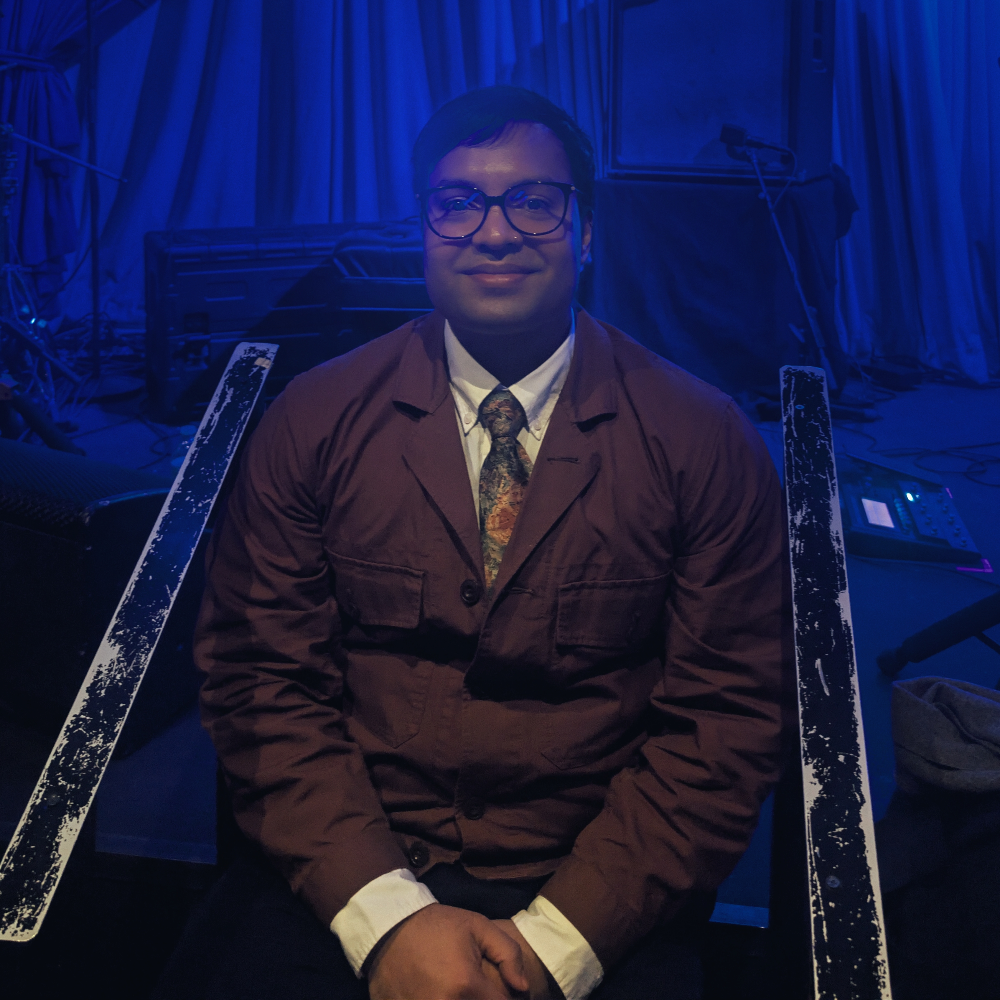

Ian Persaud
born, raised, & based in Queens NY
I'm a manager of products, programs, and projects in the tech space with a predilection for solving hard problems and building complex things; I love it the most when these two processes are intertwined.
There is art in balancing the simple with the complex, the minimal with the maximal, the rough with the refined.
I feel most beautiful when I have big ideas and I take a step down the long runway, and I feel most grateful when I have the opportunity to share the ideas and the journey to their fruition.
Current Studies
- Expanding technical skill w/ vibe coding & SQL
- Studying for the PMP exam, which I'll take in March
- Building out my Studio Business — Silver Lining Collective. My first business!
- Wrapping up work on an EP for release this spring & summer with a close collaborator — diving deeper into world building with clothing, USBs, and other physical merchandise
Now Reading
- The Souls of Black Folk — W.E.B. Du Bois
- A People's History of the United States — Howard Zinn
- Man and Society, Vol. 1 — John Plamenatz
- The Dark Forest — Liu Cixin
Things I Collect
- Books — I have a small library, I love a good, old hardcover!
- Bookmarks — to go with the books, duh. But also they document all the book stores I've been to.
- Vinyls — I love to grab something old, unknown. That's how I discover new music more than via algorithm.
- Wires — I have way too many. Don't know when I'll need em but I have em just in case.